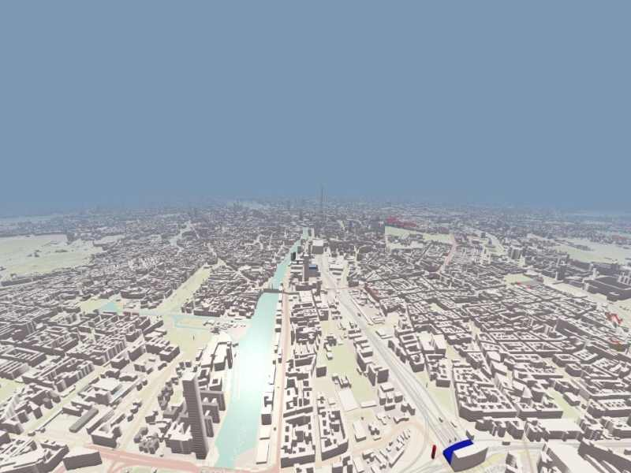

OSM Buildings
A 3D building viewer of OSM (OpenStreetMap) buildings map data.

Overview
This application demonstrates how to create 3D building geometry for display on a map using data from OpenStreetMap (OSM) servers or a locally limited data set when the server is unavailable.
Queue handling
The application uses a queue to handle concurrent requests to boost up the loading process of maps and building data.
OSMRequest::OSMRequest(QObject *parent) : QObject{parent} { connect( &m_queuesTimer, &QTimer::timeout, this, [this](){ if ( m_buildingsQueue.isEmpty() && m_mapsQueue.isEmpty() ) { m_queuesTimer.stop(); } else { #ifdef QT_DEBUG const int numConcurrentRequests = 1; #else const int numConcurrentRequests = 6; #endif if ( !m_buildingsQueue.isEmpty() && m_buildingsNumberOfRequestsInFlight < numConcurrentRequests ) { getBuildingsDataRequest(m_buildingsQueue.dequeue()); ++m_buildingsNumberOfRequestsInFlight; } if ( !m_mapsQueue.isEmpty() && m_mapsNumberOfRequestsInFlight < numConcurrentRequests ) { getMapsDataRequest(m_mapsQueue.dequeue()); ++m_mapsNumberOfRequestsInFlight; } } }); m_queuesTimer.setInterval(0);
Fetching and parsing data
A custom request handler class is implemented for fetching the data from the OSM building and map servers.
void OSMRequest::getBuildingsData(const QQueue<OSMTileData> &buildingsQueue) { if ( buildingsQueue.isEmpty() ) return; m_buildingsQueue = buildingsQueue; if ( !m_queuesTimer.isActive() ) m_queuesTimer.start(); } void OSMRequest::getBuildingsDataRequest(const OSMTileData &tile) { QString fileName = "data/" + QString::number(tile.ZoomLevel) + "," + QString::number(tile.TileX) + "," + QString::number(tile.TileY) + ".json"; QFileInfo file(fileName); if ( file.size() ) { QFile file(fileName); if (file.open(QFile::ReadOnly)){ QByteArray data = file.readAll(); file.close(); emit buildingsDataReady( importGeoJson(QJsonDocument::fromJson( data )), tile.TileX, tile.TileY, tile.ZoomLevel ); --m_buildingsNumberOfRequestsInFlight; return; } } QUrl url = QUrl(tr(m_uRL_OSMB_JSON).arg(QString::number(tile.ZoomLevel),QString::number(tile.TileX),QString::number(tile.TileY)) ); QNetworkReply * reply = m_networkAccessManager.get( QNetworkRequest(url)); connect( reply, &QNetworkReply::finished, this, [this, reply, tile, url](){ reply->deleteLater(); if ( reply->error() == QNetworkReply::NoError ) { QByteArray data = reply->readAll(); emit buildingsDataReady( importGeoJson(QJsonDocument::fromJson( data )), tile.TileX, tile.TileY, tile.ZoomLevel ); }else { qWarning() << "OSMRequest::getBuildingsData" << reply->error() << url; } --m_buildingsNumberOfRequestsInFlight; } ); void OSMRequest::getMapsData(const QQueue<OSMTileData> &mapsQueue) { if ( mapsQueue.isEmpty() ) return; m_mapsQueue = mapsQueue; if ( !m_queuesTimer.isActive() ) m_queuesTimer.start(); } void OSMRequest::getMapsDataRequest(const OSMTileData &tile) { QString fileName = "data/" + QString::number(tile.ZoomLevel) + "," + QString::number(tile.TileX) + "," + QString::number(tile.TileY) + ".png"; QFileInfo file(fileName); if ( file.size() ) { QFile file(fileName); if (file.open(QFile::ReadOnly)){ QByteArray data = file.readAll(); file.close(); emit mapsDataReady( data, tile.TileX, tile.TileY, tile.ZoomLevel ); --m_mapsNumberOfRequestsInFlight; return; } } QUrl url = QUrl(tr(m_uRL_OSMB_MAP).arg(QString::number(tile.ZoomLevel),QString::number(tile.TileX),QString::number(tile.TileY)) ); QNetworkReply * reply = m_networkAccessManager.get( QNetworkRequest(url)); connect( reply, &QNetworkReply::finished, this, [this, reply, tile, url](){ reply->deleteLater(); if ( reply->error() == QNetworkReply::NoError ) { QByteArray data = reply->readAll(); emit mapsDataReady( data, tile.TileX, tile.TileY, tile.ZoomLevel ); }else { qWarning() << "OSMRequest::getMapsDataRequest" << reply->error() << url; } --m_mapsNumberOfRequestsInFlight; } );
The application parses the online data to convert it to a QVariant list of keys and values in geo formats such as QGeoPolygon.
emit buildingsDataReady( importGeoJson(QJsonDocument::fromJson( data )), tile.TileX, tile.TileY, tile.ZoomLevel );
--m_buildingsNumberOfRequestsInFlight;
The parsed building data is sent to a custom geometry item to convert the geo coordinates to 3D coordinates.
constexpr auto convertGeoCoordToVertexPosition = [](const float lat, const float lon) -> QVector3D {
const double scale = 1.212;
const double geoToPositionScale = 1000000 * scale;
const double XOffsetFromCenter = 537277 * scale;
const double YOffsetFromCenter = 327957 * scale;
double x = (lon/360.0 + 0.5) * geoToPositionScale;
double y = (1.0-log(qTan(qDegreesToRadians(lat)) + 1.0 / qCos(qDegreesToRadians(lat))) / M_PI) * 0.5 * geoToPositionScale;
return QVector3D( x - XOffsetFromCenter, YOffsetFromCenter - y, 0.0 );
};
The required data for the index and vertex buffers, such as position, normals, tangents, and UV coordinates, is generated.
for ( const QVariant &baseData : geoVariantsList ) {
for ( const QVariant &dataValue : baseData.toMap()["data"].toList() ) {
auto featureMap = dataValue.toMap();
auto properties = featureMap["properties"].toMap();
auto buildingCoords = featureMap["data"].value<QGeoPolygon>().perimeter();
float height = 0.15 * properties["height"].toLongLong();
float levels = static_cast<float>(properties["levels"].toLongLong());
QColor color = QColor::fromString( properties["color"].toString());
if ( !color.isValid() || color == QColor::fromString("black") )
color = QColor("white");
QColor roofColor = QColor::fromString( properties["roofColor"].toString());
if ( !roofColor.isValid() || roofColor == QColor::fromString("black") )
roofColor = color;
QVector3D subsetMinBound = QVector3D(maxFloat, maxFloat, maxFloat);
QVector3D subsetMaxBound = QVector3D(minFloat, minFloat, minFloat);
qsizetype numSubsetVertices = buildingCoords.size() * 2;
qsizetype lastVertexDataCount = vertexData.size();
qsizetype lastIndexDataCount = indexData.size();
vertexData.resize( lastVertexDataCount + numSubsetVertices * strideVertex );
indexData.resize( lastIndexDataCount + ( numSubsetVertices - 2 ) * stridePermitive );
float *vbPtr = &reinterpret_cast<float *>(vertexData.data())[globalVertexCounter * striedVertexLen];
uint32_t *ibPtr = &reinterpret_cast<uint32_t *>(indexData.data())[globalPermitiveCounter * 3];
qsizetype subsetVertexCounter = 0;
QVector3D lastBaseVertexPos;
QVector3D lastExtrudedVertexPos;
QVector3D currentBaseVertexPos;
QVector3D currentExtrudedVertexPos;
QVector3D subsetPolygonCenter;
using PolygonVertex = std::array<double, 2>;
using PolygonVertices = std::vector<PolygonVertex>;
PolygonVertices roofPolygonVertices;
for ( const QGeoCoordinate &buildingPoint : buildingCoords ) {
...
std::vector<PolygonVertices> roofPolygonsVerices;
roofPolygonsVerices.push_back( roofPolygonVertices );
std::vector<uint32_t> roofIndices = mapbox::earcut<uint32_t>(roofPolygonsVerices);
lastVertexDataCount = vertexData.size();
lastIndexDataCount = indexData.size();
vertexData.resize( lastVertexDataCount + roofPolygonVertices.size() * strideVertex );
indexData.resize( lastIndexDataCount + roofIndices.size() * sizeof(uint32_t) );
vbPtr = &reinterpret_cast<float *>(vertexData.data())[globalVertexCounter * striedVertexLen];
ibPtr = &reinterpret_cast<uint32_t *>(indexData.data())[globalPermitiveCounter * 3];
for ( const uint32_t &roofIndex : roofIndices ) {
*ibPtr++ = roofIndex + globalVertexCounter;
}
qsizetype roofPermitiveCount = roofIndices.size() / 3;
globalPermitiveCounter += roofPermitiveCount;
for ( const PolygonVertex &polygonVertex : roofPolygonVertices ) {
//position
*vbPtr++ = polygonVertex.at(0);
*vbPtr++ = polygonVertex.at(1);
*vbPtr++ = height;
//normal
*vbPtr++ = 0.0;
*vbPtr++ = 0.0;
*vbPtr++ = 1.0;
//tangent
*vbPtr++ = 1.0;
*vbPtr++ = 0.0;
*vbPtr++ = 0.0;
//binormal
*vbPtr++ = 0.0;
*vbPtr++ = 1.0;
*vbPtr++ = 0.0;
//color/
*vbPtr++ = roofColor.redF();
*vbPtr++ = roofColor.greenF();
*vbPtr++ = roofColor.blueF();
*vbPtr++ = 1.0;
//texcoord
*vbPtr++ = 1.0;
*vbPtr++ = 1.0;
*vbPtr++ = 0.0;
*vbPtr++ = 1.0;
++subsetVertexCounter;
++globalVertexCounter;
}
}
}
}
}
clear();
The downloaded PNG data is sent to a custom QQuick3DTextureData item to convert the PNG format to a texture for map tiles.
void CustomTextureData::setImageData(const QByteArray &data) { QImage image = QImage::fromData(data).convertToFormat(QImage::Format_RGBA8888); setTextureData( QByteArray(reinterpret_cast<const char*>(image.constBits()), image.sizeInBytes()) ); setSize( image.size() ); setHasTransparency(false); setFormat(Format::RGBA8); }
The application uses camera position, orientation, zoom level, and tilt to find the nearest tiles in the view.
void OSMManager::setCameraProperties(const QVector3D &position, const QVector3D &right, float cameraZoom, float minimunZoom, float maximumZoom, float cameraTilt, float minimumTilt, float maxmumTilt) { float tiltFactor = (cameraTilt - minimumTilt) / qMax(maxmumTilt - minimumTilt, 1.0); float zoomFactor = (cameraZoom - minimunZoom) / qMax(maximumZoom - minimunZoom, 1.0); QVector3D forwardVector = QVector3D::crossProduct(right, QVector3D(0.0, 0.0, -1.0)).normalized(); //Forward vector align to the XY plane QVector3D projectionOfForwardOnXY = position + forwardVector * tiltFactor * zoomFactor * 50.0; QQueue<OSMTileData> queue; for ( int fowardIndex = -20; fowardIndex <= 20; ++fowardIndex ){ for ( int sidewardIndex = -20; sidewardIndex <= 20; ++sidewardIndex ){ QVector3D transferedPosition = projectionOfForwardOnXY + QVector3D(float(m_tileSizeX * sidewardIndex) , float(m_tileSizeY * fowardIndex), 0.0); addBuildingRequestToQueue(queue, m_startBuildingTileX + int(transferedPosition.x() / m_tileSizeX), m_startBuildingTileY - int(transferedPosition.y() / m_tileSizeY)); } } int projectedTileX = m_startBuildingTileX + int(projectionOfForwardOnXY.x() / m_tileSizeX); int projectedTileY = m_startBuildingTileY - int(projectionOfForwardOnXY.y() / m_tileSizeY); std::sort(queue.begin(), queue.end(), [projectedTileX, projectedTileY](const OSMTileData &v1, const OSMTileData &v2)->bool{ return qSqrt(qPow(v1.TileX - projectedTileX, 2) + qPow(v1.TileY - projectedTileY, 2)) < qSqrt(qPow(v2.TileX - projectedTileX, 2) + qPow(v2.TileY - projectedTileY, 2)); }); m_request->getBuildingsData( queue ); m_request->getMapsData( queue );
Generates the tiles request queue.
void OSMManager::addBuildingRequestToQueue(QQueue<OSMTileData> &queue, int tileX, int tileY, int zoomLevel) { QString key = QString::number(tileX) + "," + QString::number(tileY) + "," + QString::number(zoomLevel); if ( m_buildingsHash.contains( key ) ) return; OSMTileData tile; tile.ZoomLevel = zoomLevel; tile.TileX = tileX; tile.TileY = tileY; queue.append( tile ); }
Controls
When you run the application, use the following controls for navigation.
| Windows | Android | |
|---|---|---|
| Pan | Left mouse button + drag | Drag |
| Zoom | Mouse wheel | Pinch |
| Rotate | Right mouse button + drag | n/a |
OSMCameraController {
id: cameraController
origin: originNode
camera: cameraNode
}
Rendering
Every chunk of the map tile consists of a QML model (the 3D geometry) and a custom material which uses a rectangle as a base to render the tilemap texture.
...
id: chunkModelMap
Node {
property variant mapData: null
property int tileX: 0
property int tileY: 0
property int zoomLevel: 0
Model {
id: basePlane
position: Qt.vector3d( osmManager.tileSizeX * tileX, osmManager.tileSizeY * -tileY, 0.0 )
scale: Qt.vector3d( osmManager.tileSizeX / 100., osmManager.tileSizeY / 100., 0.5)
source: "#Rectangle"
materials: [
CustomMaterial {
property TextureInput tileTexture: TextureInput {
enabled: true
texture: Texture {
textureData: CustomTextureData {
Component.onCompleted: setImageData( mapData )
} }
}
shadingMode: CustomMaterial.Shaded
cullMode: Material.BackFaceCulling
fragmentShader: "customshadertiles.frag"
}
]
}
The application uses custom geometry to render tile buildings.
...
id: chunkModelBuilding
Node {
property variant geoVariantsList: null
property int tileX: 0
property int tileY: 0
property int zoomLevel: 0
Model {
id: model
scale: Qt.vector3d(1, 1, 1)
OSMGeometry {
id: osmGeometry
Component.onCompleted: updateData( geoVariantsList )
onGeometryReady:{
model.geometry = osmGeometry
}
}
materials: [
CustomMaterial {
shadingMode: CustomMaterial.Shaded
cullMode: Material.BackFaceCulling
vertexShader: "customshaderbuildings.vert"
fragmentShader: "customshaderbuildings.frag"
}
]
}
To render building parts such as rooftops with one draw call, a custom shader is used.
// SPDX-License-Identifier: LicenseRef-Qt-Commercial OR BSD-3-Clause
VARYING vec4 color;
float rectangle(vec2 samplePosition, vec2 halfSize) {
vec2 componentWiseEdgeDistance = abs(samplePosition) - halfSize;
float outsideDistance = length(max(componentWiseEdgeDistance, 0.0));
float insideDistance = min(max(componentWiseEdgeDistance.x, componentWiseEdgeDistance.y), 0.0);
return outsideDistance + insideDistance;
}
void MAIN() {
vec2 tc = UV0;
vec2 uv = fract(tc * UV1.x); //UV1.x number of levels
uv = uv * 2.0 - 1.0;
uv.x = 0.0;
uv.y = smoothstep(0.0, 0.2, rectangle( vec2(uv.x, uv.y + 0.5), vec2(0.2)) );
BASE_COLOR = vec4(color.xyz * mix( clamp( ( vec3( 0.4, 0.4, 0.4 ) + tc.y)
* ( vec3( 0.6, 0.6, 0.6 ) + uv.y)
, 0.0, 1.0), vec3(1.0), UV1.y ), 1.0); // UV1.y as is roofTop
ROUGHNESS = 0.3;
METALNESS = 0.0;
FRESNEL_POWER = 1.0;
}
Running the Example
To run the example from Qt Creator, open the Welcome mode and select the example from Examples. For more information, visit Building and Running an Example.
See also QML Applications.